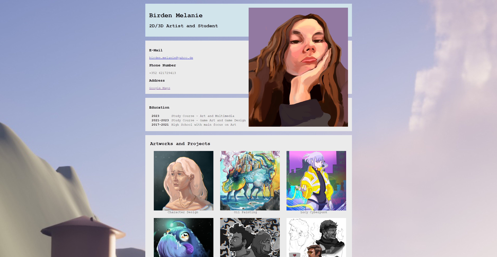

The term simply refers to the process of building and implementing user interface (UI) and user experience (UX) of a website or application. The primary goal here is to ensure that the application or website is visually appealing, responsive and user-friendly. Frontend developers work on the client side of websites, meaning they deal with everything users see and interact with.

A great user interface should effectively present information and functionality to the user in an aesthetically pleasing and user-friendly way. It aims to make the entire client interaction as positive and efficient as possible.
Key TechnologiesTo create our website, we make use of HTML (Hypertext Markup Language) to structure our content, CSS (Cascading Style Sheets) for styling and layout and JavaScript for adding interactivity, aka the fun and cool shinanigans.
To help practice our insane HTML and CSS skills, we were tasked to create our curriculum at home. The first section of this exercise aimed to help us set up a website with HTML and the second part asked us to make a visually pleasing result with CSS.
We were first asked to draft a rough plan of our curriculum, which to be honest did not look too impressive. After learning about CSS, that was about to change. I used the template we made to create this already better looking version above. To be fair, it looks like a less polished version than what we have now on this website, so that shows how much I have improved already!